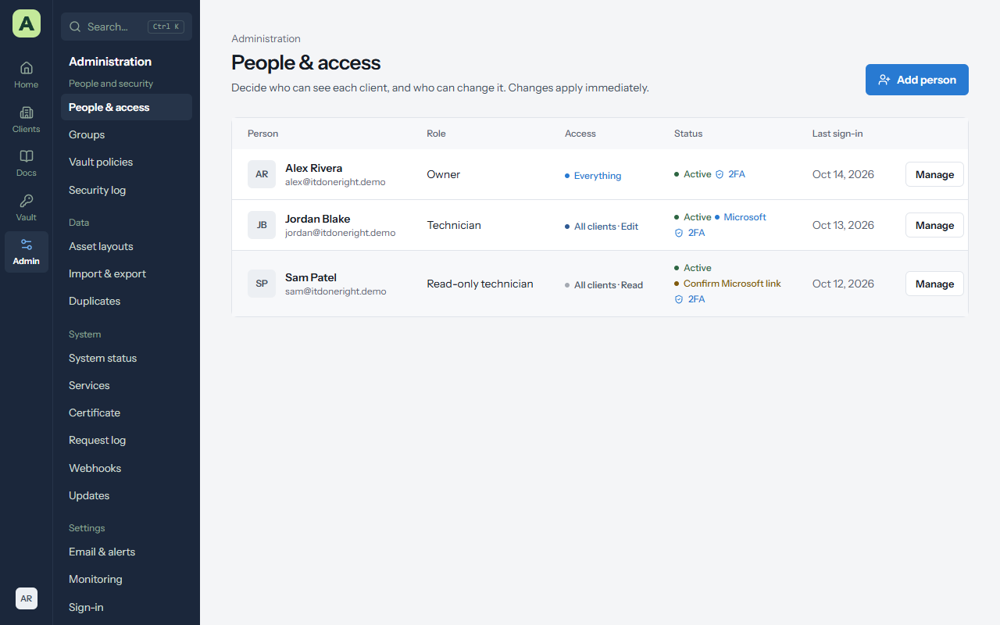
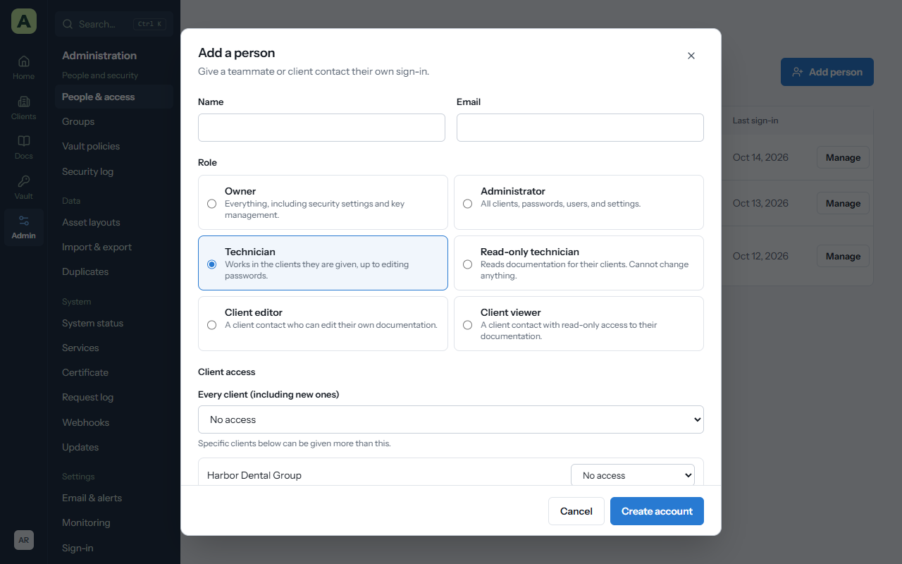
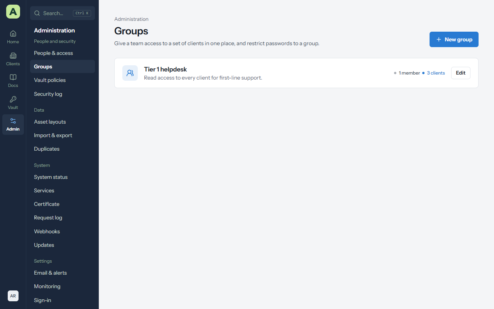
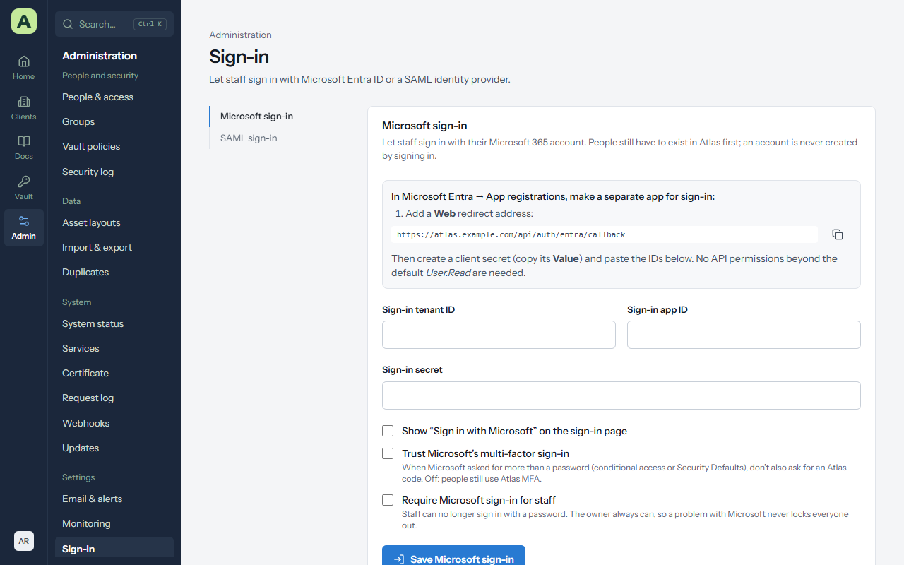
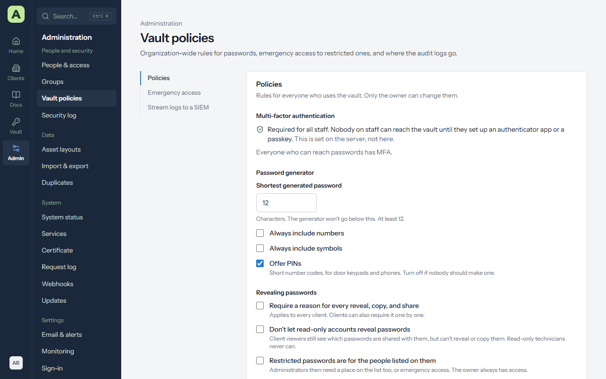
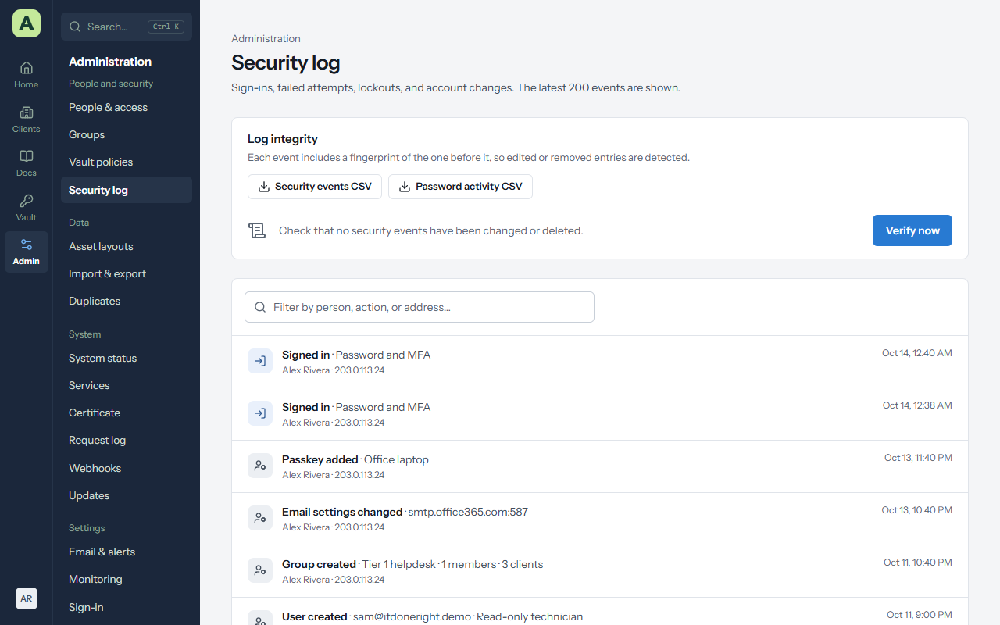

Chapter 11
People and access
This chapter is for administrators. It covers who can sign in, what each person can reach, how they sign in, and the rules that protect the vault. Atlas checks every one of these on the server for every request, so hiding something in the menus is never what protects it.
How access works
Two things decide what someone can do: their role, and their access level for each client.
Roles
| Role | Who it's for | What it allows |
|---|---|---|
| Owner | You, and perhaps one partner | Everything, including security settings, vault policies, remote access, key management and erasing all data. |
| Administrator | People who run Atlas | All clients, passwords, people and settings. Can't create, change or reset owners, or change the owner-only settings. |
| Technician | Your engineers | Works in the clients they're given, up to editing passwords. |
| Read-only technician | Juniors, auditors, contractors | Reads documentation for their clients. Can't change anything or reveal passwords. |
| Client editor | A client's own IT contact | Edits their own company's documentation in the client portal. |
| Client viewer | A client's staff | Reads their own company's documentation. |
Owners and administrators see every client, always. The first four are staff; the last two are client accounts, which can only ever see their own client.
Access levels
For each client, every other person has one of four levels:
| Level | Can |
|---|---|
| No access | Not see the client at all. It doesn't appear in lists, search or reports. |
| Read | See its documentation, and the names of its passwords. |
| Edit | Also change documentation. |
| Edit + passwords | Also reveal, copy, add and change passwords. |
A person's level for a client is the highest of: their Every client level, their own level for that client, and the levels of any group they're in. It is then capped at what their role allows: a read-only technician never gets more than Read, whatever a group gives them. Changes apply straight away, even to people who are signed in.
People & access


Admin → People & access lists everyone who can sign in, with their role, a summary of their access (Everything, All clients · Read, a client's name, or No clients), whether two-step sign-in is on, and when they last signed in. Accounts not used for 60 days are marked, so you can disable them. Choose Manage to change someone.
Add a person


- Choose Add person.
- Enter their Name and Email. The email is how they sign in, and must match their account at Microsoft or your SAML provider if they'll use single sign-on.
- Choose their Role. Only the owner can make another owner.
- For a staff role, under Client access, choose the level for Every client (including new ones). Then, in the list of clients below, raise it for individual clients where needed; a client left on Default gets the Every client level. Administrators and owners skip this, since they see everything.
- For a client role, there's no Every client level: give them a level for their own client only, in the list of clients.
- Atlas fills in a Temporary password: a random passphrase. Keep it, or choose Generate another password.
- Choose Create account, and give them the temporary password privately, such as by phone or a Send. Don't email it with the address.
At first sign-in they choose their own password (at least 12 characters), and staff set up two-step sign-in with an authenticator app before they can do anything else.
Changing someone
Choose Manage on their row. You can change their name, role and client access, then Save. Changing someone's role lowers their client access to what the new role allows.
When someone forgets their password or loses their phone
People can reset a forgotten password themselves from the sign-in page, once email is set up. When they can't:
- Choose Manage, then Reset sign-in.
- Atlas gives them a new temporary password.
- If they've lost their authenticator app, tick Also reset two-step verification. They set it up again next time they sign in.
- Choose Reset sign-in, and give them the temporary password privately.
Resetting signs them out everywhere, including the browser extension and Atlas for Windows. Five wrong attempts in a row lock an account for 15 minutes; a reset doesn't need you to wait.
When someone leaves
- Ask them first to move anything in their personal vault that the company needs. Nobody else can open it, including you.
- Choose Manage, tick Disable this account, and save. They're signed out everywhere at once, including the extension and Atlas for Windows, and can't sign in until re-enabled. Their history stays, so the security log still shows what they did.
- Revoke any API keys they made, since a key acts as the person who made it.
- Change the passwords they used that matter. The Password activity CSV on the security log shows which they revealed or copied.
Sign out everywhere ends every session for a person without disabling them, for example if a laptop is lost.
Sessions
A sign-in lasts until the person signs out, is idle for 2 hours, or 12 hours have passed, whichever comes first. Remember this browser for 30 days on the code screen skips the two-step code on that browser, not the password.
Safeguards
- You can't change your own role or disable yourself.
- Administrators can't create, change or reset owners.
- At least one active owner must remain.
Groups


Admin → Groups gives a team access to a set of clients in one place. For example, a Tier 1 group with Read for every client, or a team that looks after a few clients with Edit + passwords for those.
- Choose to add a group; the New group dialog opens. Give it a Name and, if you like, a Description.
- Add its members.
- For each client, choose the group's level.
- Save.
Members get this access on top of their own, and someone in several groups gets the highest level any of them gives. Each person's role still caps what they can do. Groups can also be listed on restricted passwords, so a whole team can use them.
Single sign-on
Staff can sign in with Microsoft Entra ID or any SAML 2.0 identity provider (Okta, Google Workspace, Duo, JumpCloud and others). Both are set up under Admin → Sign-in, and both follow the same rules:
- Signing in never creates an account. Add the person in Atlas first, with the same email address they have at the provider.
- An administrator confirms each person's first link. The first time someone signs in, Atlas matches them by email and stops. Open them under People & access → Manage: it shows Waiting, with the name, email and ID the provider sent. If that's really them, choose Confirm Microsoft account or Confirm SAML account. After that, Atlas recognizes them by the provider's own ID, so a changed address still works and a look-alike address gets nowhere. Unlink Microsoft or Unlink SAML undoes it.
- The owner can always use a password. With single sign-on required, other staff can't sign in with a password or passkey, but the owner can, so a problem at the provider never locks everyone out.
- Atlas's own two-step sign-in still applies unless you choose to trust the provider's.
- Client accounts always sign in with a password.


Microsoft Entra ID
Use a separate app registration from the one used for email or Microsoft 365, so each has only the permissions it needs.
-
In the Microsoft Entra admin center, open App registrations → New registration. Name it,
for example
MSP Atlas sign-in, and choose Accounts in this organizational directory only. -
Under Redirect URI, choose Web and paste the address shown on the
Microsoft sign-in card in Atlas (Copy the redirect address). It's your
Atlas address followed by
/api/auth/entra/callback. Choose Register. - Copy the Directory (tenant) ID and Application (client) ID from the app's overview.
- Under Certificates & secrets, create a client secret and copy its Value. Note when it expires. No API permissions beyond the default User.Read are needed.
- In Atlas, enter the Sign-in tenant ID, Sign-in app ID and Sign-in secret.
- Tick Show “Sign in with Microsoft” on the sign-in page, and choose Save Microsoft sign-in.
- In a private browser window, choose Sign in with Microsoft as a staff member, then confirm their link as above. Check they get in.
- Only then, if you want, tick Require Microsoft sign-in for staff.
| Option | What it does |
|---|---|
| Trust Microsoft's multi-factor sign-in | When Microsoft already asked for more than a password (through conditional access or Security Defaults), Atlas doesn't also ask for its own code. Off, people still use Atlas's. |
| Require Microsoft sign-in for staff | Staff can no longer sign in with a password. The owner always can. |
When the secret expires, sign-in with Microsoft stops. Make a new one and paste it in before then.
SAML
-
In your identity provider, add a SAML app (often called a custom or generic SAML 2.0 app) using the two
values shown on the SAML sign-in card:
-
Single sign-on (ACS) URL: your Atlas address followed by
/api/auth/saml/acs; -
Audience (SP entity ID): your Atlas address followed by
/api/auth/saml/metadata. Providers that import metadata can read it from that address.
-
Single sign-on (ACS) URL: your Atlas address followed by
-
Send the person's email address as an attribute named
email, and choose a name ID that never changes for a person (a persistent ID, not the email address if people's addresses can change). The provider must sign the assertion. - Assign the app to the staff who should use it.
- From the provider, copy its issuer (entity ID), its sign-on URL, and its signing certificate.
- In Atlas, enter the Identity provider name (shown on the button: “Sign in with …”), the Provider issuer (entity ID), the Provider sign-on URL, and paste the Provider signing certificate.
- Tick Show “Sign in with your provider” on the sign-in page, choose Save SAML sign-in, and try it in a private window, confirming the link as above, before requiring it.
| Option | What it does |
|---|---|
| The identity provider enforces multi-factor sign-in | Atlas doesn't also ask for its own code. SAML can't tell Atlas whether MFA was really used, so only tick this if the provider requires it for this app. |
| Require single sign-on for staff | Staff can no longer sign in with a password. The owner always can. |
Start from the Atlas sign-in page, not the provider's app tile: Atlas refuses a response it didn't ask for. When the provider issues a new certificate, paste the old and new together, then remove the old one once the provider has switched. Changing the identity provider clears everyone's link, and each person needs confirming again.
Vault policies


Admin → Vault policies holds the rules for the whole vault, emergency access, and where the audit logs go. Every administrator can see them; only the owner can change them.
Policies
| Policy | What it does, and when to use it |
|---|---|
| MFA | Not a setting: lists every active account that can reach passwords without two-step sign-in, such as client accounts, so you can follow up. |
| Shortest generated password | The generator never makes a shorter password than this. At least 12 characters, up to 64. |
| Always include numbers / Always include symbols | Every generated password has at least one, for systems that insist. |
| Offer PINs | Short number codes, for door keypads and phones. Turn off if nobody should make one. |
| Require a reason for every reveal, copy, and share | People type why before seeing a password, and the reason goes in its access history. Applies to every client; clients can also require it one by one. Useful for compliance, at the cost of a few seconds each time. |
| Don't let read-only accounts reveal passwords | Client viewers still see which passwords are shared with them, but can't reveal or copy them. Read-only technicians never can. |
| Restricted passwords are for the people listed on them | Administrators then need a place on a restricted password's list too, or emergency access. The owner always has access. Turn on when even administrators shouldn't see some passwords, such as a client's domain admin. |
| Give each staff member a personal vault | A private place for their own logins and notes, under My vault. Nobody else can open it, including you, and it isn't in reports or the audit log. Turning this off hides the vaults without deleting anything. |
Emergency access
For when the owner can't be reached and a restricted password is needed.
- The owner adds trusted administrators under Emergency access: choose the Administrator, the Wait before access (1, 4 or 12 hours, or 1, 2, 3 or 7 days) and Add.
- When it's needed, the trusted administrator opens Vault policies, chooses to request access, and answers Why do you need emergency access? The owner is emailed at once.
- During the wait, the owner can Deny it or Approve now. Otherwise access starts when the wait ends, and everyone involved is emailed.
- Access covers every restricted password for 24 hours. The owner can end it early.
Choose a wait long enough for the owner to notice the email and deny a request they didn't expect, but short enough to be useful in an emergency. Every step is in the security log, and each password used this way says Emergency access in its access history.
Streaming logs to a SIEM
Stream logs to a SIEM sends the security log and the password access log, as they happen, to your SIEM or log platform. It starts with events after you turn it on.
- Tick Stream logs.
-
Choose Send by:
-
Webhook: enter the Webhook address (
https://). Each batch is POSTed as JSON:{ events: [...] }. Optionally enter a Signing secret; each request then carriesX-Atlas-Signature: sha256=and the HMAC-SHA256 of the body. - Syslog: enter the Syslog server and Port, and choose the Transport: TLS (recommended, usually port 6514), TCP (usually port 514) or UDP (usually port 514). Messages are RFC 5424. UDP can lose messages without anyone knowing, so prefer TLS.
-
Webhook: enter the Webhook address (
- Tick what to send: Security log (sign-ins, failures, lockouts, and changes to people and settings) and Password access log (every reveal, copy, change and share, with the reason given).
- Save, then choose Send a test event and find it in your SIEM.
Events go out about every 30 seconds. If the SIEM can't be reached, Atlas shows the error on the page and tries again from the same place, so nothing is skipped.
The security log


Admin → Security log has two lists:
- Security log: sign-ins, failed attempts, lockouts, account and access changes, API key use, exports, backups, service actions, remote access changes and updates, each with who, when and the address it came from. The latest 200 are shown.
- Vault access: every password reveal, copy, change and share across all clients, with the reason given. The latest 300 are shown.
Exports
- Security events CSV and Password activity CSV download the whole of each log. Atlas asks for your password again first.
- Compliance evidence pack downloads a ZIP of the log check, the security log, two-step sign-in status, vault policies, and each client's latest access review, for auditors and insurers.
Checking the log hasn't been changed
Each event includes a fingerprint of the one before it, and Atlas signs a checkpoint, so an edited, reordered or removed entry is detected. Log integrity → Verify now checks the whole chain. Do it every week; System status reminds you after two days.
Logs are kept forever by default. To keep them for 1 to 7 years instead, see Alerts and logs.